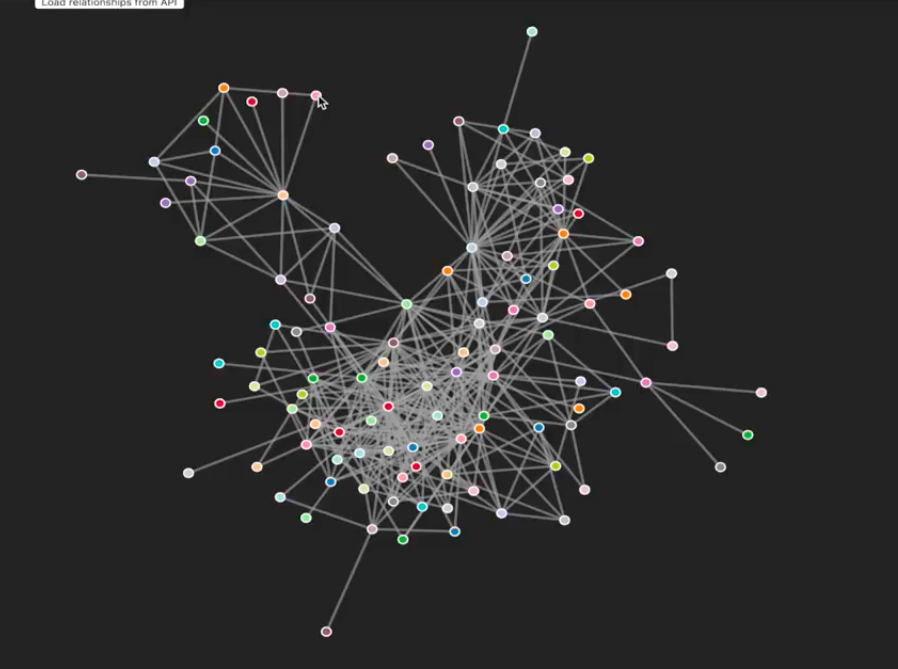
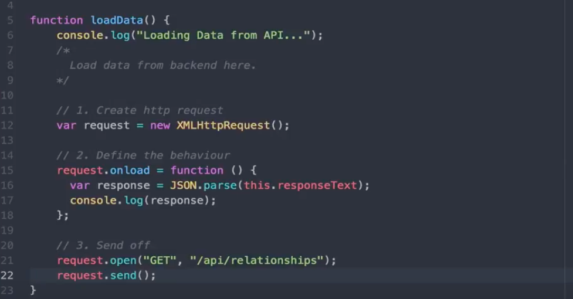
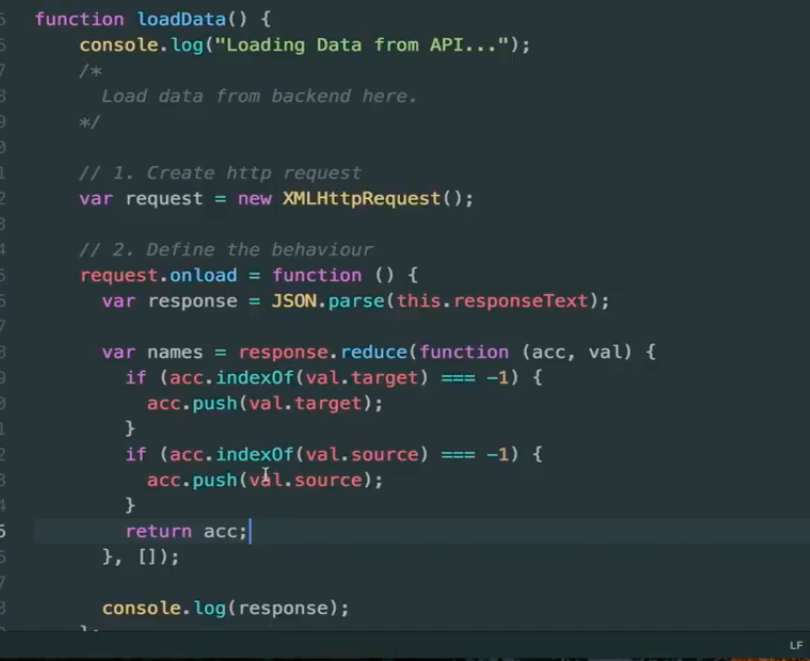
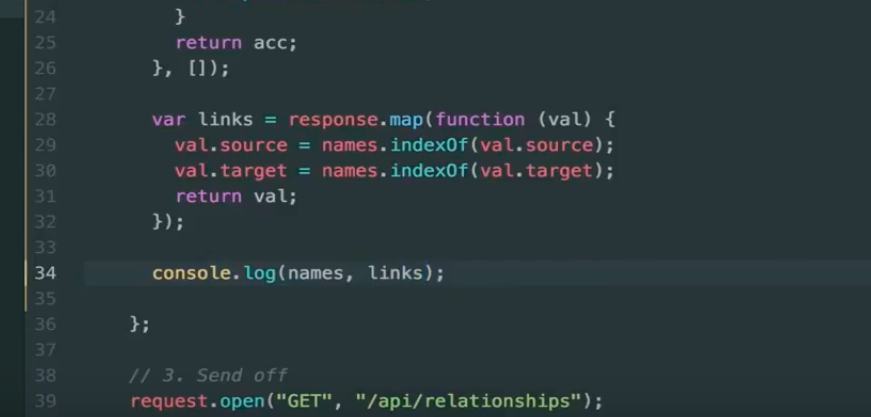
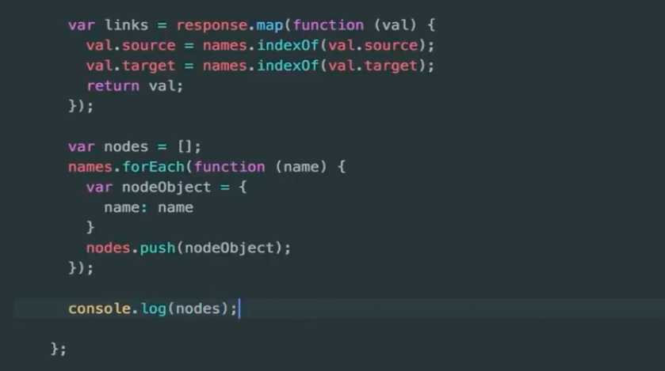
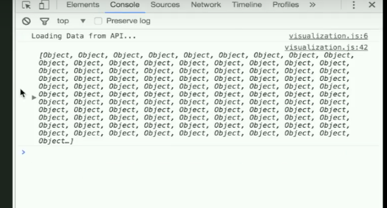
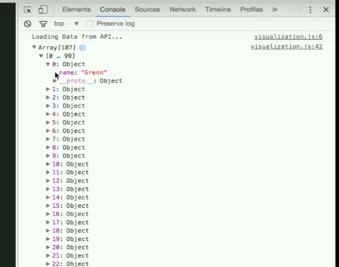
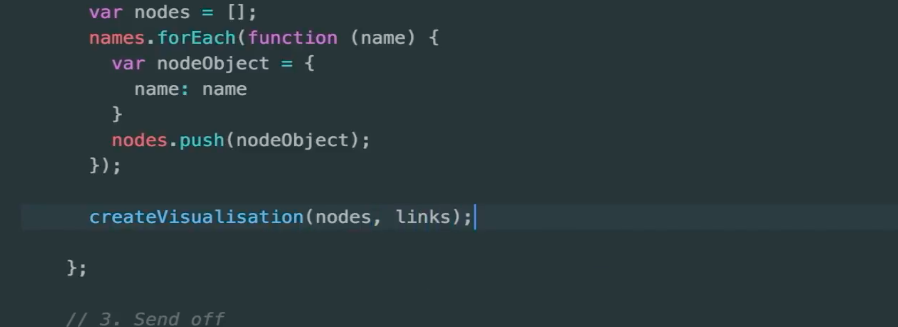

In the previous page, we talked about how we can use HTTP calls to retrieve data from an API. In this video, we'll be taking a look at how to transform that data, so we can use it in the next video to create a graph visualization, like the one you can see here.
The data retrieved from our API in the first video was a list of relationships between characters in the Game of Thrones novels and you can actually see these relationships as the links between those points in this graph. Now, to build a graph like this, we need two things - we need the list of relationships, so the links, we also need the characters themselves who would represent the nodes. So, what we're going to do now is to go through the list of relationships and extract a unique list of names, so we can connect them, as you can see here.
Now, each of these interactions is actually an object. It has a number of attributes and the ones we are most interested in here, are source and target, which are the source and target of the interaction or the relationship. And then the values for these attributes are names of characters from the Game of Thones novels. So, let's go back and look at the code that we generated in the first video.
We're in our visualization.js file in the public section of our code and we populated this loadData function by generating a HTTP request, defining what we're going to do with it after it successfully loaded the data and then sending it off. And now, we're going to start working a bit more with this onload function and we're going to transform the response data that we had in a way that we can use it with D3 later on.
So, D3 for generating a graph visualization actually expects two things - a list of Node objects and the list of relationships or link objects. So, we already have a list of relationship objects and the first thing we need to do now is to extract a unique list of node names. So, what we're going to do is to take another look at our relationship objects. We're going to go through all of the link objects of this list and for each of the source and target names we're going to check if this name is already part of our unique name list and if it's not, we're going to add it and then do the same for the target. I'm going to do this for all of the objects.
So, first thing to do is to create a new variable called names and this list of names is going to be extracted from the array of relationships, which is stored in our response object. So, I'm going to use the functional approach here using an array function that is native to JavaScript, called reduce. So, I'm going to call this reduce function on the response object, or this array of relationships, which is stored in this variable. And what reduce does is it goes over an array of object and applies a function to it, to each and one of those, and it also keeps an accumulator variable that gets filled up as we go along.
So, what we're going to do is we're going to create a function and this function will be applied to each of those objects. In this case, this function will extract the names and then, back here, we have an empty array. This is our list of names in the beginning. It's empty and as we go along, I'm going to put names in there if they don't already exist. And by the end of the reduced function, this variable will hold to fill up array back here, which is the list of names. And this function up here, we are just going to create an anonymous function, right here in place. So, this reduce function is a higher-order function calling this anonymous function on the element of the array and this function gets two parameters. The first one is the accumulator. In our case, that's going to be an array and the first step is the empty one and then the second step it's going to be whatever we did with it in the first step. And it also gets a value. In our case, that's going to be a relationship that is stored in this response array.
So, now, what we need to do is we need to check if the target and source names of our relationship are already part of our names object, or list of names. And the list of names, the current one, is going to be stored in our accumulator. So, what we're going to do is to check if this accumulator already has this name as part of it. So, I'm going to use the indexOf function on the val.target. So, this checks if the name that's stored in the target attributes of our relationship object is found anywhere in our list of names and if it does, it will return the position of it in the array. And if it is not already in there, it will return -1. So, if the name is not already part of a list, we're going to add it. So, we're going to push the name to our accumulator array, which is the list of names, and then we're going to do the exact same thing except for the source name. source equals -1. Then, we're gonna push this source name as well. We potentially now modify this accumulator array by adding one or maybe two names. In any case, we want to return this accumulator. So, in the second step, or in the following step, this is now the new list in which there are any names that we added in this step. That's already enough to get a list of unique names from our array of responses.
So, one more thing that D3 is a bit unique with - we already have a list of interactions or links between names, which are the relationships, except that D3 cannot work with the names themselves. Instead, it needs IDs and the IDs are going to correspond to the position of the names in this array. So, the next thing we're going to do is we're going to go over the response array, which holds our relationships one more time and we're going to replace the actual names with the position of those names in the names array.
So, we're going to use, in this case, we're going to say new variable and these are going to be our links we are going to use in our visualization later and that's going to be a response.map(). This is another JavaScript array function and it's very similar to the reduce, except, in this case, we are not going to keep any accumulator. It's just going to pass this anonymous function that will be applied to each of the relationships. In this case, this function only gets the value of the current position in the array and what we're going to do is we're going to replace the source with the position of this name in the names array. It's going to be another names.indexOf val.source. We're going to check where in the list of names is this name and then replace the name with that number and we're going to do the same for the target as well. And then, we're going to return this modified relationship, so it will be replaced in the array of relationships. Now, we're going to take another look at what that looks like and I'm going to log both the names and the links.
Now, we need one more thing to work with D3. As I mentioned before, D3 actually needs a list of objects that represent the nodes. Currently, we have a list of strings that are the names. Now, we're going to need to transform those names one more time into a list of array.
So, basically, the list of nodes look like this. It's an array and this array has a list of objects and we're going to give it just one attribute called name. At the end of our next transformation, we want to have an array of objects with where the name attribute corresponds to the name. And this time, we're going to go through the names using the forEach function, another JavaScript array function, and this one also takes an anonymous function and that gets the current value. In this case, it's name and actually whatever you call this variable is relevant, you can call it X if you want, but in this case we're going through a list of names. So, name seems appropriate and now for each of those names we need to create a new object.
So, we need one more variable, which are going to be our nodes. That's going to be an array and for each of the names we're going to create a new object. So, new node object that has one attribute called names and that would be the name variable from up here. And then, we're gonna add this node object to our list of nodes that we're going to use later. Now, this is all we need. I'm going to take another look at that just to make sure. So, our nodes now look like this.
 It's an array of objects now and each object has one name attribute. So, we have now a list of node objects, which hold our names and the list of links, which holds relationships between those nodes and that's already enough for us to start to get to work with D3. And we're going to do this in this createVisualization function in the next video. So, just to finish this off, what we're going to do is we're going to pass this data, which is gathered from our API and transform in the correct format. I'm going to pass it to this createVisualisation() function down there that's just calling the function with the nodes as nodes and the links as links.
And that's it! That's already enough in terms of data transformation. In the next video, we're going to take a closer look at D3 and how to you use this data to create our graph. Thank you very much for watching, see you in the next video!